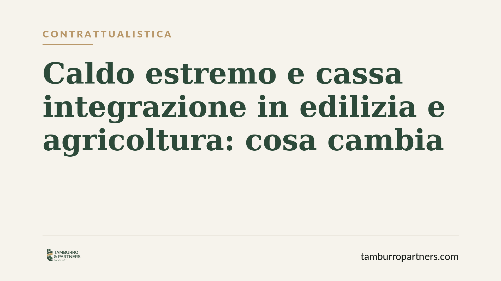

Caldo estremo e cassa integrazione in edilizia e agricoltura: cosa cambia
Durante le ondate di calore estremo l'INPS ha rafforzato l'accesso agli ammortizzatori sociali per edilizia e agricoltura, con deroghe contributive e regole sulla neutralizzazione dei periodi di sospensione. La misura tocca migliaia di imprese e lavoratori, ma il testo normativo di riferimento va verificato sulla fonte ufficiale prima di ogni decisione operativa.

Il contesto
Le temperature estreme sono ormai un fattore ricorrente nelle attività svolte all'aperto o in ambienti non climatizzati. Edilizia e agricoltura sono i comparti più esposti: qui il caldo non è solo un disagio, ma un rischio per la salute dei lavoratori e una causa concreta di sospensione dell'attività.
In questo quadro sono state annunciate misure straordinarie di sostegno al reddito legate agli eventi di calore. L'obiettivo dichiarato è duplice: coprire economicamente i periodi di fermo e non penalizzare le imprese che sospendono l'attività per ragioni di sicurezza.
Inquadramento normativo
Avvertenza preliminare. Il riferimento normativo indicato dalle prime notizie di stampa (un decreto-legge del 2026 con norma dedicata al caldo estremo) non è ancora verificabile sul testo pubblicato in Gazzetta Ufficiale. Numerazione, articolo e contenuto effettivo vanno confermati sulla fonte ufficiale prima di assumere qualsiasi decisione. Quanto segue descrive l'impianto atteso, non un testo definitivo.
Due sono i profili tecnici da tenere distinti.
Il primo è la deroga ai limiti contributivi: in via ordinaria l'accesso alla cassa integrazione richiede il versamento dei contributi addizionali e presuppone requisiti di anzianità e di durata (D.lgs. 148/2015). Le misure straordinarie da calore tendono ad allentare questi vincoli quando la sospensione dipende da eventi meteo non imputabili al datore.
Il secondo è la neutralizzazione dei periodi: i giorni di sospensione per caldo non vengono conteggiati nel plafond massimo di settimane fruibili. In pratica, l'impresa non "consuma" la propria capienza di cassa integrazione per un fermo dovuto a cause esterne.
Attenzione, però, al coordinamento con la CISOA (Cassa Integrazione Salariale Operai Agricoli). Il comparto agricolo segue una disciplina autonoma rispetto alla CIG del D.lgs. 148/2015: la CISOA ha regole proprie su requisiti, causali (tra cui le intemperie) e durata. Le nuove misure vanno lette come innesto su questo sistema separato, non come semplice estensione della cassa integrazione ordinaria. Verificare quale strumento si applichi al singolo rapporto è quindi un passaggio non eludibile.
Le soglie meteo attese
Un nodo pratico riguarda i parametri di attivazione. La prassi INPS più recente non si limita alla temperatura dell'aria, ma valorizza indici di calore percepito. In precedenti circolari sono stati utilizzati i bollettini e le soglie del progetto Worklimate e i bollettini regionali sul rischio da calore, che combinano temperatura, umidità e tipologia di attività (al sole o all'ombra, carico fisico).
È ragionevole attendersi che anche le nuove misure rinviino a soglie oggettive di questo tipo, per ancorare la sospensione a un dato verificabile e non a una valutazione discrezionale del datore. La conferma, di nuovo, dipende dal testo ufficiale e dalla circolare attuativa INPS.
Implicazioni pratiche
Per le imprese il vantaggio è concreto: continuità del sostegno al reddito e minor erosione del plafond. Ma il beneficio è condizionato al rispetto rigoroso dei presupposti.
L'uso della misura fuori dai casi previsti — ad esempio invocando il caldo per coprire un calo di commesse — espone a contestazioni, recupero delle somme e possibili profili sanzionatori. La causale dichiarata deve corrispondere alla situazione reale e documentabile.
Resta inoltre centrale il collegamento con la sicurezza sul lavoro. L'obbligo di valutare il rischio da esposizione al calore discende dal D.lgs. 81/2008: il datore deve aggiornare il documento di valutazione dei rischi (DVR) e adottare misure di prevenzione. La sospensione per caldo non sostituisce questi obblighi, ma vi si integra.
Cosa fare in concreto
- Verificate gli estremi normativi ufficiali. Non basatevi sulle notizie di stampa: attendete la pubblicazione in Gazzetta Ufficiale e la circolare attuativa INPS prima di presentare istanze.
- Individuate lo strumento corretto. Distinguete tra CIG (edilizia) e CISOA (agricoltura): sono discipline diverse, con requisiti e causali propri.
- Documentate le condizioni meteo. Conservate bollettini regionali e dati sulle soglie di calore riferiti al giorno e al luogo della sospensione.
- Aggiornate il DVR. Verificate che la valutazione del rischio termico sia formalizzata e coerente con le misure di prevenzione adottate.
- Tracciate la causale. Motivate ogni sospensione con riferimenti oggettivi, per reggere a un eventuale controllo.
Disclaimer
Contributo informativo a cura di Tamburro & Partners - Avv. Giuseppe Tamburro. Non costituisce parere legale.
Ogni storia di lavoro ha i suoi tempi.
Se gestisci HR e vuoi un confronto su contenzioso, ispezioni o licenziamenti, scrivi allo studio. Ti rispondiamo entro un giorno lavorativo.